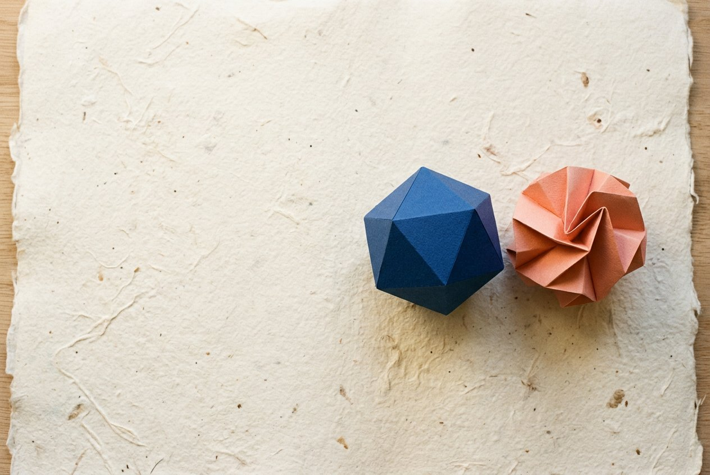

Independent study, edition 04
Objects worth keeping.
A quiet index of useful forms, lasting materials, and decisions that improve with time.

Selected notes
Independent study, edition 04
A quiet index of useful forms, lasting materials, and decisions that improve with time.

Selected notes